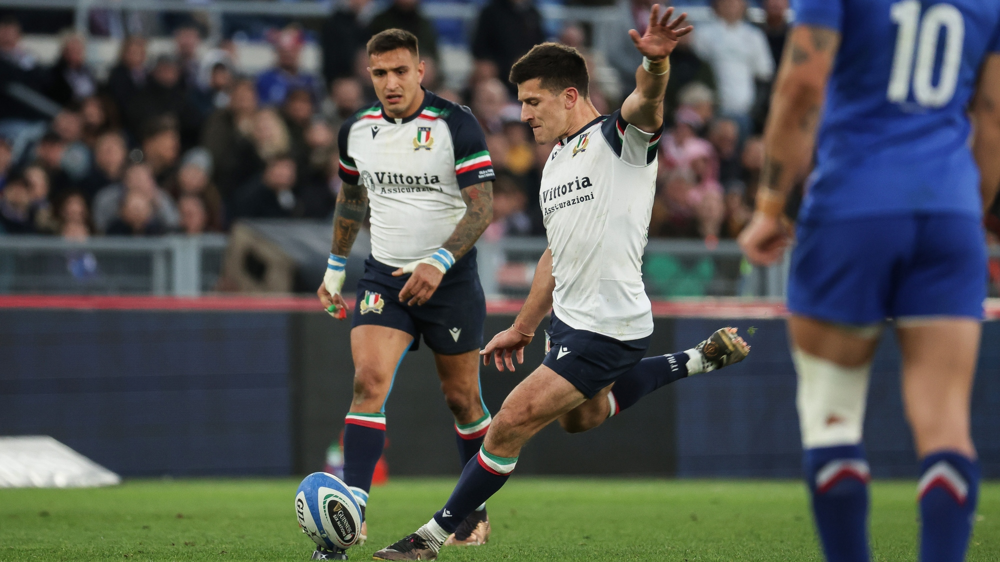

Rugby World Cup points
Italy’s highest scorer across men’s Rugby World Cups.
World Rugby · through RWC 2023 ↗TOMMASO ALLAN
The time before the kick.
Find the line.
Forget everything else.
Italy’s highest scorer across men’s Rugby World Cups.
World Rugby · through RWC 2023 ↗Italy’s leading points scorer in the men’s Championship.
Through 14 March 2026 · calculation & sources ↓Italy’s leading try scorer in the men’s Championship.
Through 14 March 2026 · calculation & sources ↓Behind Diego Domínguez. Allan is also Italy’s leading active international points scorer.
Through 11 July 2026. Italy’s most-capped active international.
2015 · 2019 · 2023
Reviewed 13 September 2026. Records below refer to Italy’s men’s team, not to all nations combined.
Some published career aggregates conflict across sources. Combined club-and-country totals and an exact current Test-points total are therefore omitted.

France. Italy. England. Home again.
A career shaped by the places in between.
The first professional chapter. French rugby, a new stage, and an Italy debut in the same year.
2013Play a film below, or open it on YouTube.
01 / PLAYER FOCUS · WORLD RUGBY
02 / ITALIAN MAGIC · WORLD RUGBY
05 / ALWAYS AZZURRO
Tommaso Allan
Italy · Fly-half / Full-back